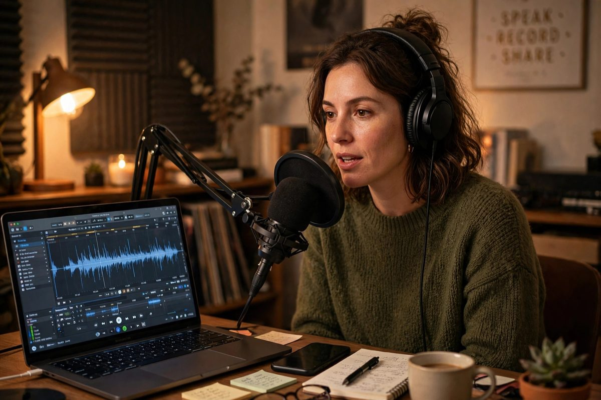

Best CapCut Templates in 2026

Templates are the fastest way to make a polished video in CapCut — pick your clips, and the timing, transitions and effects are done for you. These are the styles dominating feeds in 2026.
What templates actually do
A CapCut template is a ready-made edit: someone built a timeline with cuts, transitions, effects, text and music, and left empty slots for your photos or videos. You open the template, replace the clips with your own, and export. The template handles the hard parts — beat timing, zoom curves, colour looks — while your content makes it yours. Templates live in the Templates tab of the app, and in TikTok's "use this template" links. Some are free, some need premium, and the most popular ones get used millions of times.
Photo slideshow templates
The classic: 6–12 photos, each shown for half a beat, with zooms and a music drop at the end. Slideshow templates work for travel memories, birthday posts, product photos and before-and-after edits. The best ones in 2026 use slow push-ins on the first photos and a fast flash sequence at the end. Choose photos with similar lighting so the slideshow feels like one shoot, not a random camera roll, and put your strongest image last — that is the one people remember.
Beat-sync templates
Beat-sync templates cut exactly on the music: every drum hit gets a new clip or a zoom punch. They are the most used template style on TikTok because the rhythm does the work of holding attention. To use one well, pick clips with movement in them — walking, turning, jumping — because static clips look dead even when they cut on the beat. Keep each clip under a second and let the music carry the energy.
Velocity and 3D zoom templates
Velocity edits slow down and speed up a single clip in waves, usually on a car, a skateboard or a dance move. 3D zoom templates push into a still photo so it feels like a video. Both styles look impressive and both are easy to overuse: one velocity moment per video is a highlight, five in a row is noise. Use them on your single best clip, and keep the rest of the video simple so the effect stands out.
Lyric and text templates
Lyric templates animate song words on screen in time with the music, usually with bold kinetic type. They are popular for music clips, quotes and announcements. The trick is picking a song your audience knows — the template works because viewers read along. Keep the font big and the words short; a full sentence per screen is too much to read in half a second. Two or three words per line is the sweet spot.
How to use a template without looking like everyone else
The weakness of templates is sameness: millions of people use the same one. Stand out by changing one thing — your own clips, obviously, but also the music, the text, or the order of the clips. Swap the template's song for a less-used track, change the caption font, or replace the final clip with something unexpected. A template should be a starting point, not the whole video. The creators who grow fastest use templates to learn timing, then build their own edits with the same techniques.
Finding templates in the app
Open CapCut, tap Templates, and browse by category or search for a style ("velocity", "slideshow", "lyric"). Each template shows how many people used it and how many clips it needs. Tap "Use template", select your photos or videos in order, and preview before exporting. If a template asks for premium, look for a free one with the same style — there is almost always an equivalent. And be careful with templates shared through random links outside the app: only use templates inside CapCut itself.
Frequently asked questions
Are CapCut templates free?
Many are free, and some need a premium subscription. Free templates cover every popular style, including slideshows, beat sync and velocity.
Can I edit a template after using it?
Yes. After replacing the clips, you can adjust text, change the music, and add or remove effects before exporting.
Why does my template video look different from the preview?
Usually because the clips are a different shape or length than the template expects. Use vertical clips for vertical templates, and enough clips to fill every slot.
Download CapCut — official app
Get the real CapCut free from your official app store. No modified files, no risk.
Try the tools
Aspect Ratio Calculator
Presets for TikTok, Reels, Shorts and YouTube. Enter one side and get the matching resolution instantly.
Bitrate & Export Size Calculator
Work out how big your exported video will be from its length and bitrate — or the bitrate for a target size.
Caption Timing Helper
Paste your script and split it into timed caption lines with start and end timestamps, ready to use.
Template Idea Generator
Pick a niche and a mood and get a complete edit idea: hook, style, transitions and music vibe.
More guides
 What Is CapCut Mod APK?
What Is CapCut Mod APK? CapCut Premium vs Free
CapCut Premium vs Free Is CapCut Mod APK Safe?
Is CapCut Mod APK Safe? How to Install CapCut Officially
How to Install CapCut Officially Auto Captions in CapCut
Auto Captions in CapCut Keyframe Animation in CapCut
Keyframe Animation in CapCut CapCut Transitions Tutorial
CapCut Transitions Tutorial Best Video Quality Settings
Best Video Quality Settings Best Export Settings in CapCut
Best Export Settings in CapCut CapCut for TikTokCapCut for Instagram Reels
CapCut for TikTokCapCut for Instagram Reels Text Effects in CapCut
Text Effects in CapCut Background Removal in CapCut
Background Removal in CapCut Speed Ramping in CapCut
Speed Ramping in CapCut Filters and Effects in CapCut
Filters and Effects in CapCut
Audio Editing in CapCut CapCut vs KineMaster
CapCut vs KineMaster CapCut for Beginners
CapCut for Beginners Trending Edits Tutorial
Trending Edits Tutorial